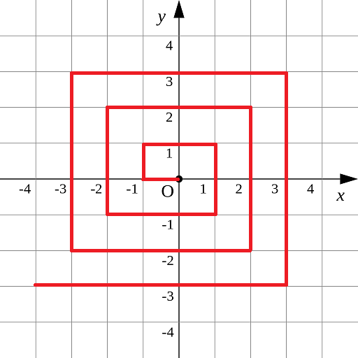
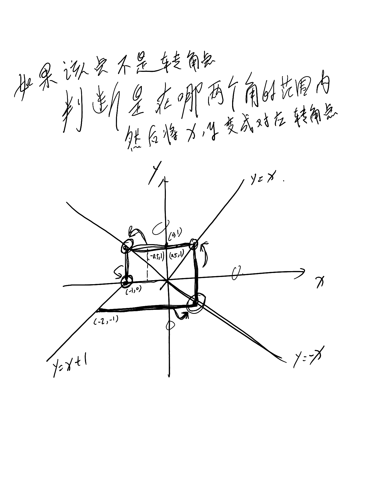
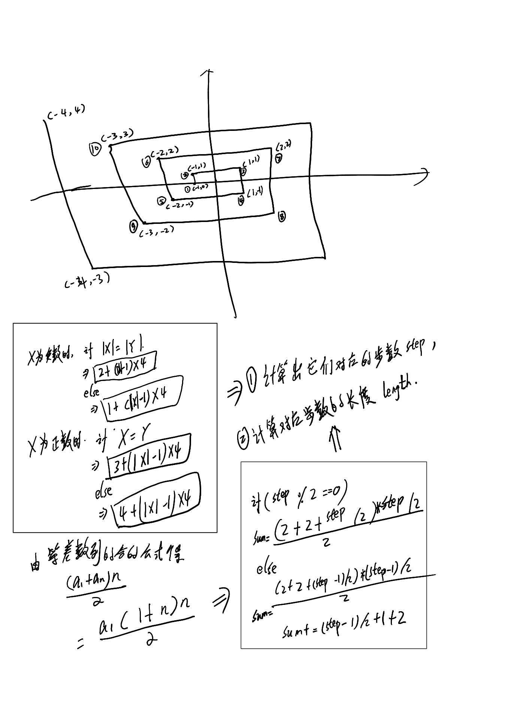
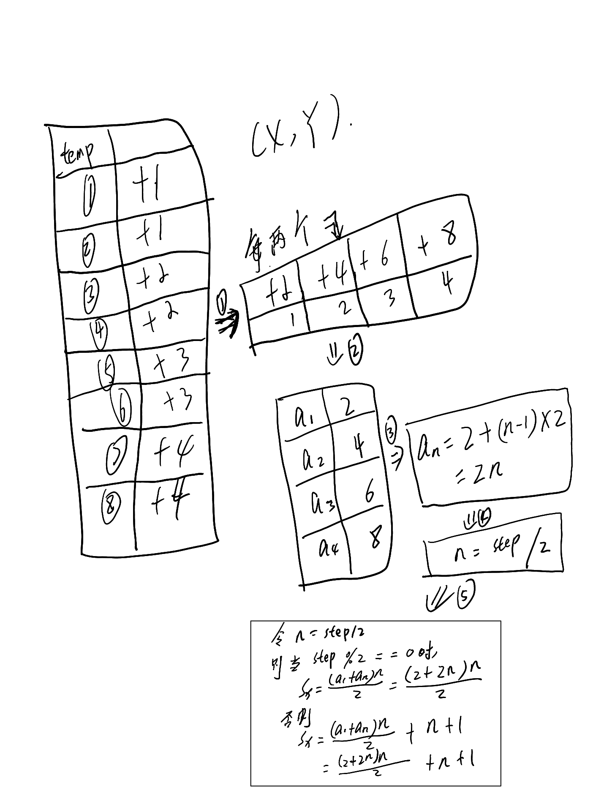

标题：螺旋折线
如图p1.png所示的螺旋折线经过平面上所有整点恰好一次。
对于整点(X, Y)，我们定义它到原点的距离dis(X, Y)是从原点到(X, Y)的螺旋折线段的长度。
例如dis(0, 1)=3, dis(-2, -1)=9
给出整点坐标(X, Y)，你能计算出dis(X, Y)吗？
【输入格式】
X和Y
对于40%的数据，-1000 <= X, Y <= 1000
对于70%的数据，-100000 <= X， Y <= 100000
对于100%的数据, -1000000000 <= X, Y <= 1000000000
【输出格式】
输出dis(X, Y)
【样例输入】
0 1
【样例输出】
3
资源约定：
峰值内存消耗（含虚拟机） < 256M
CPU消耗 < 1000ms
请严格按要求输出，不要画蛇添足地打印类似：“请您输入...” 的多余内容。
注意：
main函数需要返回0;
只使用ANSI C/ANSI C++ 标准;
不要调用依赖于编译环境或操作系统的特殊函数。
所有依赖的函数必须明确地在源文件中 #include <xxx>
不能通过工程设置而省略常用头文件。
提交程序时，注意选择所期望的语言类型和编译器类型。

解题思路：



实现代码：
1 #include<iostream>
2 #include<algorithm>
3 using namespace std;
4
5 int main(){
6 int x, y;
7 int state = 0; // 记录该坐标是否为转角坐标
8
9 cin >> x;
10 cin >> y;
11
12 int x_original = x, y_original = y; //记录原始坐标
13
14
15 // 如果是处于转角的点
16 if(abs(x) == abs(y) || (x < 0 && y <= 0 && x + 1 == y))
17 {
18 ;
19 }
20 else{
21 state = 1;
22 // 找到该坐标所对应的区域，并找到 相应的对角坐标
23 if(y > 0 && y > abs(x)){
24 x = -y;
25 }
26 else if(x > 0 && x > abs(y)){
27 y = x;
28 }
29 else if(y > 0 && x > y && x < 0){
30 y = x + 1;
31 }
32 else{
33 x = -y;
34 }
35 }
36
37 int step;
38 // 计算出该坐标所对应的步数 step
39 if(x > 0){
40 if(x == y) step = 3 + (abs(x) - 1) * 4;
41 else step = 4 + (abs(x) - 1) * 4;
42 }
43 else{
44 if(abs(x) == abs(y)) step = 2 + (abs(x) - 1) * 4;
45 else step = 1 + (abs(x) - 1) * 4;
46 }
47
48 int sum;
49 int n = step / 2;
50 if(step % 2 == 0) sum = (2 + 2 * n) * n / 2;
51 else sum = (2 + 2 * n) * n / 2 + n + 1;
52
53 //如果输入的点不是转角点，则加上原来的点到转角的点的距离
54 if(state) sum += abs(x_original - x) + abs(y_original - y);
55
56 cout << sum;
57 return 0;
58 }